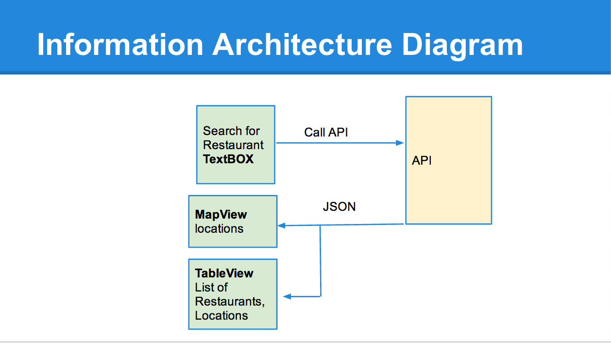

This is resulted from the final project on mobile developing class. The idea of the App is for the user to able to check the food inspection and violation for different restaurants around Seattle Area. The goal of this app is to bring the hidden information to the public with easy access and help to promote the food saftety. The flow of the app is straight forward. The user can search for the restaurants name and the result will be displayed on either tableView or mapView.
